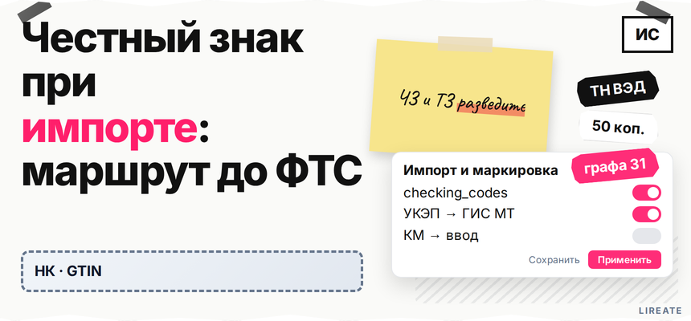
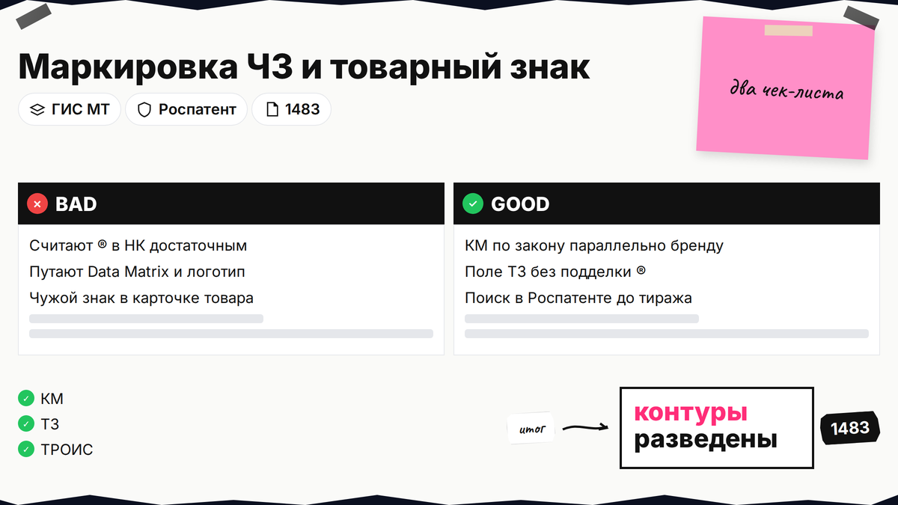
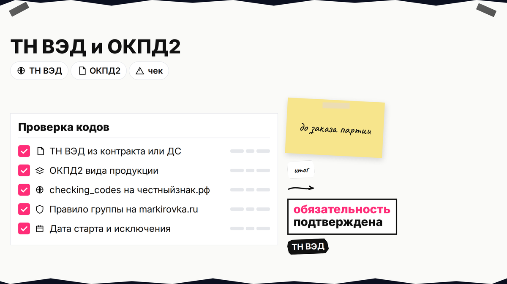
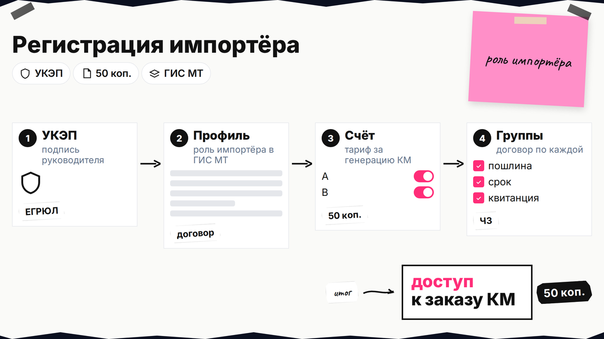

Контейнер уже едет, а декларант спрашивает про ТН ВЭД, GTIN и графу 31. "Честный знак" при импорте не регистрирует бренд: система ведёт цифровую прослеживаемость, а права на название - в Роспатенте. За один проход вы проверите товар по кодам, войдёте в ГИС МТ, соберёте документы, закажете КМ со способом "Ввезен в РФ", пройдёте таможню и ввод в оборот и поймёте, что писать в поле "товарный знак" в каталоге. 18.11.2026; не заменяет таможенную или патентную консультацию.

TL;DR / Быстрый инсайт: По ТН ВЭД и ОКПД2 проверьте обязательность маркировки. Далее: УКЭП и роль импортёра в ГИС МТ, карточка Национального каталога с полем товарный знак, КМ Data Matrix по 50 коп. со способом "Ввезен в РФ", нанесение до ФТС (вне ЕАЭС) или до границы (ЕАЭС), отчёт о нанесении, графа 31, документ "Ввод в оборот". Роспатент и ЧЗ - параллельно, не взаимозаменяемы.
Длинный чек-лист с штрафами - в чек-листе markirovka.ru по импорту. Сбои при выпуске - в справке docs.crpt.ru; здесь только базовый маршрут простыми словами.
КМ (код маркировки) - уникальный Data Matrix на каждую штуку; КИ - код идентификации, которым вы оперируете в ДТ. Импортёр по правилам системы - резидент РФ, который первым владеет маркируемым товаром на территории страны: чаще всего это ваше юрлицо или ИП, даже если производство за рубежом.

ГИС МТ "Честный знак" - государственная система маркировки: на каждую единицу клеят Data Matrix, чтобы видеть путь товара от ввоза до кассы. Товарный знак - исключительное право на название и логотип после внесения в реестр Роспатента; указание бренда в Национальном каталоге не равно регистрации. ТРОИС - таможенный реестр объектов интеллектуальной собственности: правообладатель может добиваться остановки партии с поддельным знаком, и это не подменяет заказ КМ.
| Вопрос | КМ (Честный знак) | Товарный знак |
|---|---|---|
| Цель | Прослеживаемость по закону | Монополия на бренд |
| Где | честныйзнак.рф | Роспатент |
| На коробке | Data Matrix | Имя или логотип по свидетельству |
Делайте: два чек-листа - маркировка и бренд. Не делайте: чужой ® в карточке НК - риск п. 6 ст. 1483 ГК РФ.
Маршрут:
ТН ВЭД → ГИС МТ → НК (GTIN + ТЗ) → КМ → нанесение → отчёт → ДТ (гр. 31) → ФТС → ввод → продажа

ТН ВЭД - десятизначный таможенный код из контракта или ДС; ОКПД2 - девятизначный код вида продукции. Сервис checking_codes на честныйзнак.рф принимает только ТН ВЭД или пару ТН ВЭД + ОКПД2. Ответ рекомендательный: откройте экспериментальное правило найденной группы на markirovka.ru и сверьте дату старта, исключения и срок, до которого нужно нанести коды.
Делайте: скрин проверки в папку к контракту. Не делайте: копировать код "соседа" без сверки цифр.

Регистрация на честныйзнак.рф идёт с УКЭП (усиленная квалифицированная электронная подпись руководителя или ИП): нужны криптопровайдер, плагин для подписи, выписка ЕГРЮЛ/ЕГРИП, профиль с ролью импортёр, подписание договоров с оператором по каждой товарной группе и пополнение лицевого счёта. Генерация одного КМ тарифицируется 50 коп. без НДС - сумму закладывайте исходя из тиража партии.
Делайте: подключить все релевантные товарные группы сразу. Не делайте: ждать прибытия контейнера без кабинета.
GTIN - номер позиции; заводской глобальный код обычно не требует ГС1 РУС, префиксы 460-469 - отдельные правила. Чужая карточка - создайте свой экземпляр с вашим именем и знаком.
В "Товарный знак" - слово с этикетки, зарегистрированное обозначение или "Без товарного знака" / "Нет"; пустым не оставляйте. Инструкция: как создать карточку.
Делайте: сверить макет с карточкой до заказа КМ. Не делайте: чужой известный бренд "для узнаваемости".
| Этап | Артефакты |
|---|---|
| До КМ | УКЭП, договор ЦРПТ, ТН ВЭД, ОКПД2, ДС/СС для карточки |
| Нанесение | Заявка КМ, макет для фабрики, отчёт о нанесении |
| Таможня | Контракт, инвойс, CMR/ТТН, ДТ, графа 31 |
| После ФТС | Ввод в оборот |
Параллельно с маркировкой соберите классический пакет импорта: контракт, инвойс, упаковочный лист, транспортные документы, разрешительку (декларация или сертификат), где она нужна по ТР ТС.
Делайте: список КИ декларанту заранее и проверку, что все коды из партии эмитированы вашим кабинетом. Не делайте: продажу до ввода в оборот и смешивание кодов от разных заказов в одной ДТ.
В заявке на изготовление КМ выберите способ выпуска "Ввезен в РФ" - другой способ часто ломает цепочку у новичка. Готовый файл с кодами передают фабрике за рубежом или на склад для печати Data Matrix. Нанесение: ввоз вне ЕАЭС - до помещения под процедуру выпуска для внутреннего потребления; из стран ЕАЭС - до фактического пересечения границы РФ. После нанесения подайте отчёт о нанесении вручную в СУЗ или через API-интеграцию. Без отчёта КМ часто остаётся в статусе "Эмитирован", и ФТС не выпустит товар.
Делайте: заложить время на печать на фабрике. Не делайте: везти без нанесения при наступившем сроке группы.
В графе 31 декларации сведения о маркировке указывают одним из способов: код идентификации на единицу (КИ), на групповую упаковку (КИТУ) или агрегированный таможенный код (АТК) - точный формат возьмите в актуальной инструкции ФТС и у брокера. Декларант должен видеть коды после отчёта о нанесении, а не "висящие" эмитированные КМ. ФТС сверяет данные ДТ с ГИС МТ; расхождение по количеству или статусу - частая причина задержки выпуска. При отказе - справке docs.crpt.ru, не гадайте по переписке.
Делайте: сверить число КИ и единиц. Не делайте: менять список кодов в последний день.
Для ввоза вне ЕАЭС после положительного решения ФТС создайте документ "Импорт с ФТС" и завершите ввод до выставления товара на реализацию. Для товаров из ЕАЭС используйте "Трансграничная торговля"; для части групп заранее требуется уведомление о трансграничной торговле (см. инструкцию по вводу). Передавать коды контрагентам по ЭДО и выкладывать товар на витрину, на склад маркетплейса или в опт можно только после успешного ввода. Бренд на карточке площадки - отдельная тема: сверка с инструкции Wildberries по бренду.
Делайте: одного ответственного за склад и ГИС МТ. Не делайте: отгрузку на площадку без статуса в системе.
Если на коробке ваше новое имя, параллельно с маркировкой проверьте обозначение в Поисковой платформе и при необходимости подайте заявку на товарный знак - регистрация занимает месяцы, а контейнер может прийти раньше. Три колонки "ЧЗ / ТЗ / ТРОИС", штрафы и ветвления - в чек-листе markirovka.ru по импорту. Для защиты уже зарегистрированного знака на границе изучите внесение в ТРОИС - это дополняет, но не заменяет КМ.
Нужна помощь с заявкой под импортный бренд - сопровождение на странице регистрации или вопрос в Telegram Лирейт.
Делайте: согласовать этикетку до тиража. Не делайте: откладывать поиск сходства до порта.
Материал проверен: редакция Лирейт.
Достоверность: тариф 50 коп., сроки нанесения, "Ввезен в РФ", ввод с ФТС и ЕАЭС - по markirovka.ru на ноябрь 2026; ТЗ - ГК РФ.
Нет. Пройдите маркировку в ГИС МТ и введите товар в оборот по закону, а исключительное право на бренд оформляйте в Роспатенте, если продаёте под своим именем.
Откройте checking_codes, введите код, затем прочитайте правило товарной группы на markirovka.ru и сверьте дату старта с датой отгрузки партии.
Укажите слово с этикетки, зарегистрированное обозначение или формулировку "без знака"; поле не пустое, а чужой известный бренд не делает вас правообладателем.
Обычно нет для глобального импортного кода; префиксы 460-469 уточняйте в инструкции.
Китай и вне ЕАЭС - до ФТС; Казахстан и ЕАЭС - до границы, дальше "трансграничная торговля".
Сверьте отчёт, "Ввезен в РФ" и графу 31; по сбоям - справке docs.crpt.ru.
Сначала ввод в оборот, затем требования площадки в инструкции Wildberries по бренду.